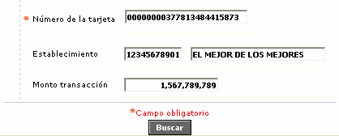
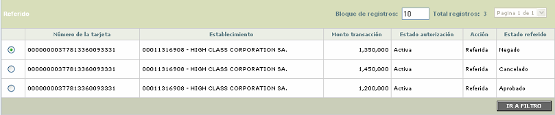
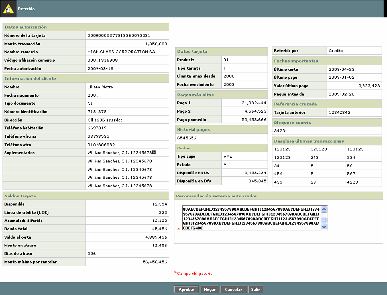

Referidos
Mediante esta opción, el actor puede consultar aquellas autorizaciones que de acuerdo con la validación de las reglas aplicadas por el autorizador, fueron enviadas a 'Referir'.
Al ingresar al formulario se despliega un filtro inicial en el cual el actor debe diligenciar de manera obligatoria el número de la tarjeta a la que pertenece la autorización referida, y opcionalmente el código del establecimiento y el valor de la transacción.

Una vez validados los filtros el sistema traerá todas las autorizaciones referidas que además de cumplir con los filtros ingresados, correspondan a la fecha actual real. El formulario muestra el número de tarjeta, el establecimiento en el que se hizo la transacción, el monto de la transacción, el estado de la autorización, la acción (debe ser 'Referido' y el estado del referido que puede ser Negado, Aprobado, Cancelado, cuando ya ha sido tramitado, o en blanco.

El formulario contiene el hiérvínculo Referido, mediante el cual el actor puede después de seleccionar alguno de los registros desplegados, puede invocar el formulario en el cual consulta la información necesaria para tomar una decisión respecto del referido, la que puede ser aprobar, negar o cancelar la autorización.
Con excepción de los campos del bloque 'Datos autorización' que son tomados directamente de la tabla de autorizaciones y del campo 'Recomendación sistema autorizador' que es el único editable por el actor, todos los demás campos se toman de la tabla de referidos donde son actualizados mediante el cargue de un archivo de referidos ejecutado desde automatización de procesos.
Nota importante: este formulario requiere que exista información para la tarjeta en la tabla de referidos (CO_REFERRAL); si para la tarjeta a la cual pertenece el registro seleccionado no existe en dicha tabla, al invocar el hipervínculo de referidos se despliega un mensaje indicando este evento al actor y no le permite ingresar al formulario correspondiente.

Solo se describen aquellos campos que se generan directamente por el sistema durante el proceso de autorización
|
Número de la tarjeta |
Campo que muestra el número de tarjeta que solicita la autorización. |
| Monto transacción | Despliega el valor de la transacción solicitado por la autorización. |
| Nombre comercio | Contiene el nombre del establecimiento que solicita la autorización |
| Código afiliación comercio | Indica el código con el cual la entidad identifica al establecimiento |
| Fecha autorización | Corresponde a la fecha en la cual ingreso la autorización referida, mostrada en formato YYYY-MM-DD |
|
Recomendación sistema autorizador |
Campo alfanumérico de hasta 400 caracteres, obligatorio, en el cual el usuario del call center registra las observaciones para sustentar el motivo por el cual se negó, aprobó o canceló el referido. Si el referido ya fue procesado previamente, este campo es solo de consulta y no permite ingresar o modificar información. |
El formulario contiene tres botones mediante los cuales el actor puede aprobar, negar o cancelar el referido de acuerdo con las políticas de la entidad, además del botón Salir que le permite regresar al formulario inicial que contiene el filtro de consulta.
Una vez que el referido sea negado, aprobado o cancelado, al seleccionarle nuevamente e invocar el hipervínculo 'Referido' el formulario NO mostrará los botones Aprobar, Negar y Cancelar de modo que el actor solo puede consutlar la información desplegada.